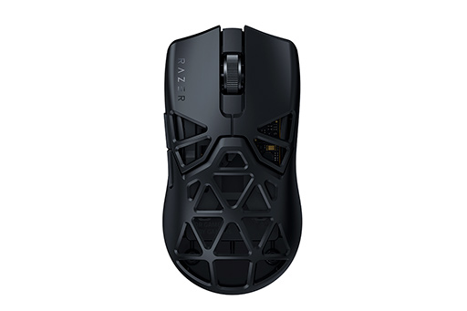

This page introduces the Razer devices I use and recommends.
My Use Devises
[自分が使っているデバイス]| マウス | キーボード | ヘッドセット |
|---|---|---|
 Naga v2 pro
Naga v2 pro |
Hantsman mini |
 Blackshark v2 pro
Blackshark v2 pro |
| サイドパネルを変えることで普段使いや ゲームまで幅広い使い方が可能 |
テンキーレスで省スペース！ スイッチも静音とクリッキーの２種類があります |
ワイヤレスなので有線での煩わしさ無し！ 遅延もなくバッテリーも長持ち！ |
Recommendation
[その他オススメ]

|

|
 |